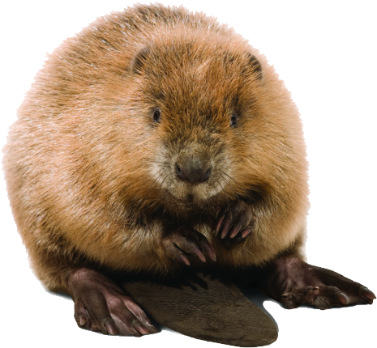

{% extends "gameplayer.html" %}
{% block game %}
                                                                                <hidden beaver image></hidden>

<script>
    var canvas = document.getElementById("gameCanvas");
    var ctx = canvas.getContext("2d");

    function sleep(ms) {
      return new Promise(resolve => setTimeout(resolve, ms));
    }

//notes:
//need all the gameObjects to move with froggy, so when froggy moves forward the camera moves up.
//need logs to move from left to right and right to left, with both short and long logs showing up
//need lillipads to be by themselves
//need froggy to die if he is not on top of a log or if he goes off the screen
//need froggy to have up down left and right movement

    class Froggy {
        constructor(x, y) {
            this.x = x;
            this.y = y;
            this.width = 40;
            this.height = 40;
            this.xVelocity = 0;
            this.yVelocity = 0;
            this.jumping = 0;
        }
        show() {
            var img = document.getElementById("beaveravatar");
            ctx.drawImage(img, this.x, this.y, this.width, this.height);
        }
        jump() {
            p.jumping = 1;
            setTimeout(function() {p.stop();}, 400);
        }
        stop() {
            this.xVelocity = 0;
            this.yVelocity = 0;
            this.jumping = 0;
        }
        update() {
            this.x += this.xVelocity;
            this.y += this.yVelocity;
        }
    }

    class Log {
        constructor(y, x, width, gap, xVelocity) {
            this.x = x;
            this.y = y;
            this.width = width;
            this.height = 50;
            this.gap = gap
            this.xVelocity = xVelocity;
            this.yVelocity = 0;
        }
        show() {
            ctx.fillStyle = "brown";
            ctx.fillRect(this.x, this.y, this.width, this.height);
            ctx.fillRect(this.x+this.gap, this.y, this.gap*this.gap/this.width, this.height);
            ctx.fillRect(this.x+this.width+this.gap, this.y, this.gap*this.gap/this.width, this.height);
            ctx.fillRect(this.x+3*this.gap, this.y, this.gap*this.gap*this.gap/(this.width*this.width), this.height);
        }
        stop() {
            this.yVelocity = 0;
        }
        update() {
            this.x += this.xVelocity;
            this.y += this.yVelocity;
        }
    }

    var p; var Logs; var log;
    var count;
    var updater;
    var xSide; var xVel; var gapLength; var widthLength;

    function update() {
        canvas.width = canvas.width;
        count = Logs.length;
        for (var h = 0; h < count; h++) {
            log = Logs[h];
            log.update();
            log.show();
        }
        p.update();
        p.show();
        if (p.y < 100) {
            cameraScroll();
        }
    };

    function spawnLog(start) {
        if (Math.random() > Math.random() ) { xSide = 200; xVel = -1;}
        else { xSide = -200; xVel = 1; }
        gapLength = 50 + Math.random() * (50);
        widthLength = 50 + Math.random() * (150);
        d = new Log(start, xSide, widthLength, gapLength, xVel);
        Logs.push(d);
    }

    function start() {
        p = new Froggy(480, 455);
        Logs = [];
        spawnLog(450); spawnLog(370);
        updater = setInterval(update, 10);
    };

    function cameraScroll() {
        p.yVelocity = 1;
        setTimeout(function() {p.stop();}, 4800);
        count = Logs.length;
        for (var h = 0; h < count; h++) {
            log = Logs[h];
            log.yVelocity = 1;
            setTimeout(function() {log.stop();}, 4800);
        }
    }

    window.onload = function () {
        start();
    };

    //listen for arrow keys for froggy to jump, if froggy is not jumping.
    document.addEventListener("keydown", event => {
      if (p.jumping == 0) {
      event.preventDefault();
      const key = event.key; // "ArrowRight", "ArrowLeft", "ArrowUp", or "ArrowDown"
      switch(event.key) { // change to event.key to key to use the above variable
        case "ArrowLeft":
          // Left pressed
                                p.xVelocity = -2;
                                p.jump();
          break;
        case "ArrowRight":
          // Right pressed
                                p.xVelocity = 2;
                                p.jump();
          break;
        case "ArrowUp":
          // Up pressed
                                p.yVelocity = -2;
                                p.jump();
          break;
        case "ArrowDown":
          // Down pressed
                                p.yVelocity = 2;
                                p.jump();
          break;
      }
      }
    });

</script>
{% endblock %}